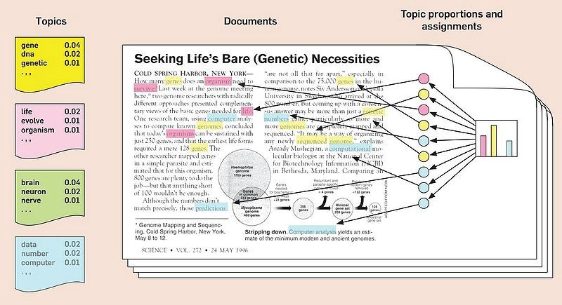
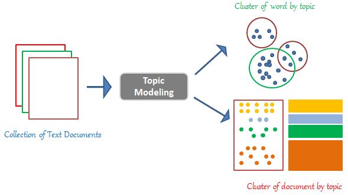
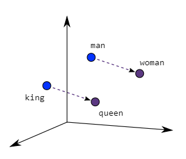
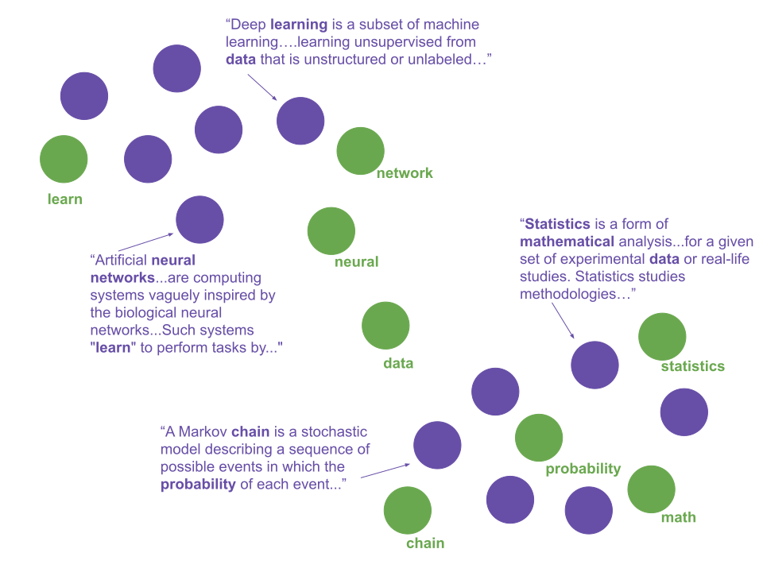

L’analyse textuelle : Prospéro et les autres
Contents
L’analyse textuelle : Prospéro et les autres#
Les chercheurs et chercheuses en sciences humaines et sociales disposent aujourd’hui d’un large éventail d’outils et de méthodes pour analyser des corpus textuels. Afin de se rendre compte de l’évolution de ce champ, de son dynamisme et de la position que Prospéro y occupe, on peut utilement lire l’ouvrage collectif Analyses textuelles en sociologie [Brossaud et al., 2006] ou l’article de Cointet and Parasie [2018].
Les CAQDAS#
La première famille d’outils, voire de logiciels, par rapport à laquelle on peut situer Prospéro est la famille des CAQDAS (Computer-Assisted Qualitative Data Analysis Software) tels que NVivo ou Atlas-ti dont l’un des objectifs, si on peut dire, est d’organiser le travail d’exploration (et de codage) qualitatif d’un corpus de documents variés, notamment du point du vue du format (audio, vidéo, images, textes). Ils représentent un dispositif de gestion des données qualitatives et de traçabilité du processus d’analyse [Rioufreyt, 2019].
Du point de vue épistémologique et méthodologique, la mobilisation des CAQDAS s’inscrit souvent dans une approche “inductive” au sens où ils permettent de faire émerger des axes d’analyse au fur et à mesure de la constitution du corpus et de l’exploration des corpus. Il serait probablement plus juste de parler d’approche abductive. En revanche, ils sont relativement “neutres” méthodologiquement au sens où ils ne reposent pas sur un “type” d’analyse comme cela peut-être le cas pour la “méthode alceste” (voir ci-après).
les outils d’analyse textuelle#
“Mondes lexicaux” et statistiques fréquentielles#
Dans le monde francophone, l’autre logiciel auquel on compare le plus souvent Prospéro est Iramuteq (version freeware d’Alceste). Iramuteq repose sur la “méhode Alceste” mis au point par Max Reinert dans la continuité des methodes développées par Benzecri (AFC) et s’inscrit, à cet égard, dans l’école “française” de l’analyse des données.
« Le locuteur au cours de son énonciation investit des mondes propres successifs et ces lieux, en imposant leurs objets, imposent du même coup leur type de vocabulaire. En conséquence, l’étude statistique de la distribution de ce vocabulaire devrait pouvoir permettre de retrouver la trace des ‘environnements mentaux’ que le locuteur a successivement investis, trace perceptible sous forme de ‘mondes lexicaux’ » [Max, 1993]
[Hypothèse 1] Nous faisons l’hypothèse qu’un corpus de texte peut être considéré comme un ensemble d’énoncés indépendants et redondants, dans la mesure où chaque énoncé est supposé porter l’empreinte d’une même processus sous-jacent dépendant des conditions de production de cet énonce (d’ordre psychique, social, culturel, narratif, etc.) [Reinert, 1987]
[Hypothèse 2] Dans un corpus vérifiant l’hypothèse 1, “les énoncés” utilisant plutôt les mêmes vocables renvoient généralement à une même représentation sous-jacente, et ceci avec d’autant plus de certitudes que le nombre d’énoncés est grand.
La méthode Alceste, développée initialement pour l’analyse de contenu en psychologie [Reinert, 1987], consiste à appliquer un algorithme de classification hiérarchique descendante à partir d’une matrice ou tableau lexical énoncés X mots.On parle de classification hiérarchique descendante, car l’algorithme consiste a “découper” (ou partitionner) le tableau lexical de sorte à maximiser le khi-deux au sein de chaque sous partie [Reinert, 1987, Reinert, 1990]. L’opération est itérée autant de fois que demandée.
| mot 1 | mot 2 | ... | mot n | |
|---|---|---|---|---|
| énoncé 1 | 0 | 1 | ... | 1 |
| énoncé 2 | 1 | 0 | ... | 0 |
| ... | ||||
| énoncé n | 1 | 1 | ... | 1 |
Approche probabiliste du topic modelling#

Une autre méthode de “Topic modelling” populaire, notamment anglo-saxon, est le “Latent dirichlet allocation”. L’algorithme vise à determiner la probabilité qu’un mot m appartienne au topic t et que le document d contenant m appartienne également à t
Latent Dirichlet Allocation (LDA) is used as a topic modelling technique that can classify text in a document to a particular topic. It uses Dirichlet distribution to find topics for each document model and words for each topic model. (a brief explanation)
It is one of the most popular topic modeling methods. Each document is made up of various words, and each topic also has various words belonging to it. The aim of LDA is to find topics a document belongs to, based on the words in it. Confused much? Here is an example to walk you through it. (A Beginner’s Guide to Latent Dirichlet Allocation(LDA))
Le modèle Latent Dirichlet Allocation suppose que chaque document est un mélange d’un petit nombre de topics, et que chaque occurrence d’un mot correspond à l’un des sujets du document. Chaque mot se voit attribuer un topic selon la loi de Dirichlet.

À partir de cette première distribution, la probabilité d’appartenance de chaque mot de chaque document à un topic t est évaluée en fonction :
De la proportion de mots du document appartenant également au topic t
De la proportion de documents appartenant au topic t à cause du mot m.
L’algorithme est répété jusqu’à trouver une distribution stabilisée.
Comme pour la “méthode alceste”, on considère les documents et les énoncés constituant ces documents comme des “sacs de mots”. L’ordre et le rôle grammatical n’est pas pris en compte. Ainsi, il est habituel de lemmatiser les termes. Le LDA suppose également de constuire un tableau lexical énoncé X termes. Toutefois, la méthode de “clustering”, qui permet de déterminer les topics, est probabiliste. L’intérêt par rapport à la méthode alecste est que le LDA autorise un document à appartenir à plusieurs topic. Une des principales limites de cette méthode est qu’il faut déterminer en amont le nombre de “topics” caractérisant le corpus. Par ailleurs, il fonctionne assez mal sur des “documents” courts comme les tweets.
On trouvera une application de cette méthode dans [DiMaggio et al., 2013]
Plongement de mots et réseaux de neurones: Top2Vec, BERTopic#
La dernière famille de méthodes de topic modelling, aussi la plus récente, consiste à s’appuyer des modèles de “plongement de mot” (word embedding). Alors que les deux précédentes méthodes appréhendent les textes comme des sacs de mot, celles-ci permettent de conserver le “sens” des termes en encodant dans des vecteurs le contexte d’apparition. Ainsi deux termes sont dits proches s’ils apparaissent dans des contextes similaires. Ces modèles fonctionnent grâce à des algorithmes d’apprentissage. Top2vec (basé sur le modèle d’embedding word2vec de Google) est l’algorithmes le plus connu. Il est basé sur le modèle d’embedding “word2vec” et “doc2vec” de Google (Voir documentation).

Word embeddings are a type of word representation that allows words with similar meaning to have a similar representation. Its the collective name for a set of language modelling and feature learning techniques in natural language processing (NLP) where words or phrases from the vocabulary are mapped to vectors of real numbers.
Les algorithmes de « plongement de mots » ou de « plongement lexical » (word embedding) forment la classe la plus récente parmi les méthodes caractéristiques des big data. Née dans les laboratoires de Google, cette famille d’algorithmes s’appuie sur des techniques d’apprentissage automatique appliquées à de très larges corpus de données souvent issus du web. À partir de ces corpus, les algorithmes apprennent la « position » de chaque mot du vocabulaire dans un espace vectoriel limité à quelques centaines de dimensions. Le processus d’apprentissage garantit que deux entités lexicales partageant les mêmes contextes se retrouveront à proximité l’une de l’autre dans l’espace euclidien dans lequel elles sont plongées. [Cointet and Parasie, 2018]
La difficulté tient principalement à la boite noire créée par l’utilisation de réseau de neurone. Certains auteurs remettent également en question la possibilité de déduire une relation “sémantique” entre des termes à partir de mesure de similarité comme le cosinus. Enfin ces méthodes ont été développées dans des champs professionnels extérieurs aux sciences humaines et sociales – voire extérieurs aux champs académiques comme le rappellent Cointet and Parasie [2018].
